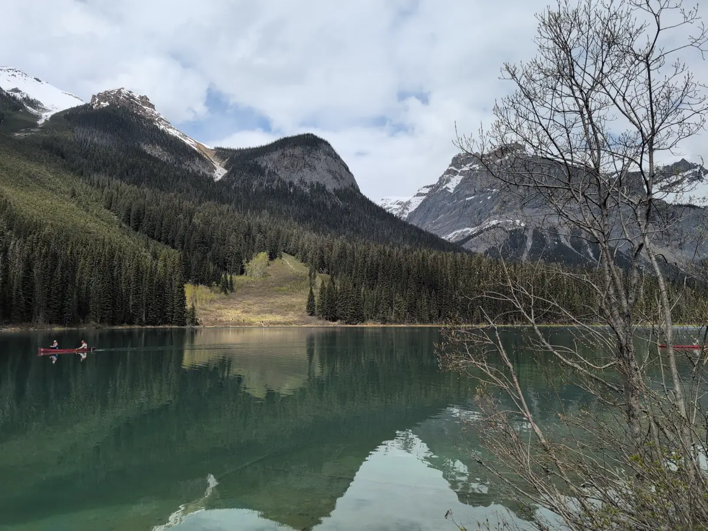
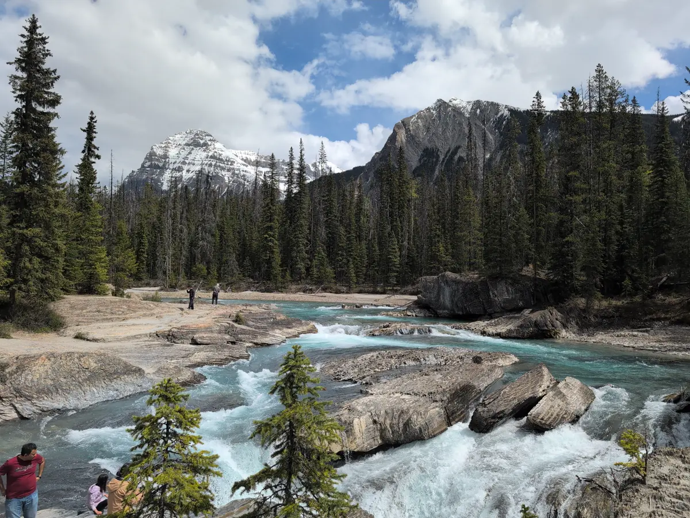
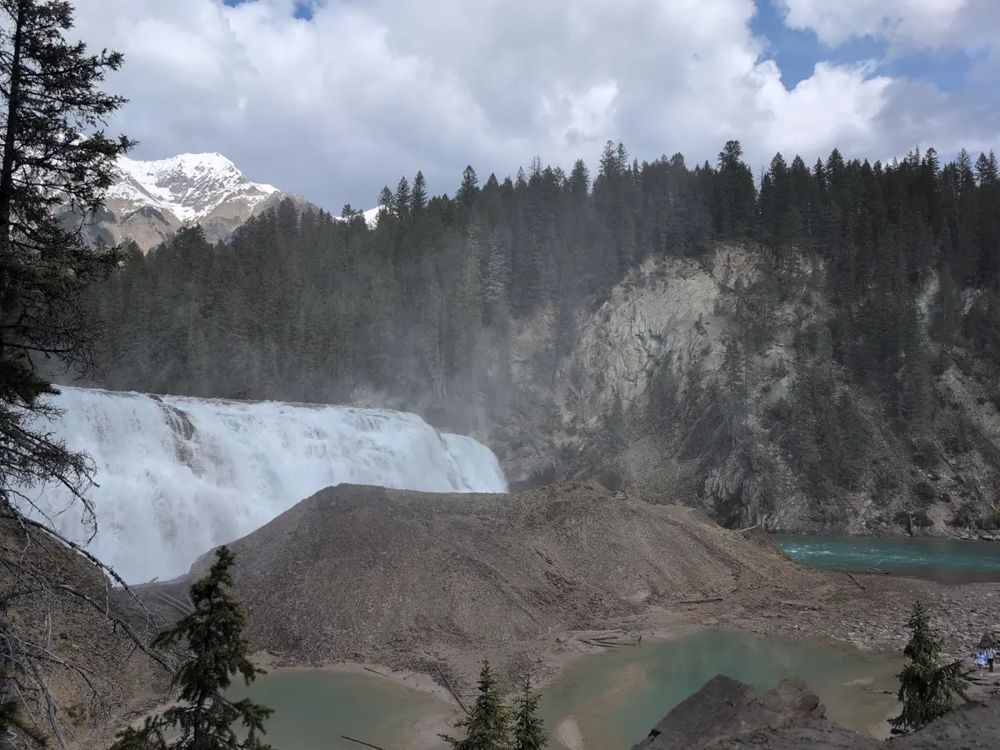

Banff Canadian National Park Travel Log
This blog post series is a direct transcript of the notes I took while visiting Banff National Park in Alberta, Canada. I left with my sister and a friend of ours on the 18th of May and returned on the 26th. I hope it inspires you to travel to the Rocky Mountains and have an adventure of your own. We will certainly be returning.
Friday, May 23rd
my sister and our friend woke up at 6:30pm MDT and got started cleaning up our AirBnB. I awoke at 8:45am MDT. At 10:45am MST we checked out of the hotel with our frozen/refrigerable foods in our reusable burlap grocery bags, wrapped in ice and plastic. My sister drove us an hour down Route 1 to Yoho National Park in British Columbia, while listening to the audiobook “That’s Not What I Meant” by Deborah Tannen. We did pass signs for Jasper and Kootenay, but they did not list the hundreds of kilometers you’d need to travel to reach them. Soon we reached Yoho’s visitor center for more collectible pins, and directions to which hikes were open in May. Most of the park was closed due to snowfall, but we were recommended to visit Emerald Lake and Wapta Falls, so that’s what we did. Emerald Lake was super crowded since we arrived at 1pm. We managed to sit down for lunch at “Cilantro on the Lake” for a cozy and “rustic” meal with window seats overlooking the cherry red canoe rentals bobbing in the distant azure. My traveling companions got to try poutine on fries with gravy for the first time! We didn’t stop to canoe, but my sister and I did snag a beautiful Emerald Lake blanket that closely resembled our father’s fishing lure quilt that we used as blanket fort material as children.

After lunch, we stopped at the “Natural Bridge” over Kicking Horse River, which strongly reminded me of Pollards Mills in Newport, New Hampshire. On our way to Wapta Falls we got stuck behind a road painting truck for roughly thirty minutes. It was a bit irritating being caught in the car equivalent of a fly trap… We had no trouble distinguishing the median and shoulder on our way however. If we had lane assist enabled on our rental car we could have snoozed all the way without trouble.

The side road to Wapta Falls seemed to immitate the surface of a golf ball. The trail itself started out muddy, then fell away to switchbacks after 2km (~1.2mi) or so. This gave us several neat vantage points to view Wapta Falls' enormous throughput and resulting mists. These mists were great enough to reflect off the clay mound ahead where, thousands of years ago, the river once fell. We left the downstream riverbed soaked with pristine droplets, after skipping stones and taking photos of the double-rainbows beneath the spray.

The new AirBnB we checked into was an ‘in-law suite’ in a neighborhood close to Banff. We had to get creative with the smart TV to watch Twilight: Breaking Dawn, Part Two. The movie was honestly a boring letdown, especially compared to the first three movies. The twist at the end came across like a slap in the face to a new Twilight fan like myself (Go Team Bella!!). It is 1:00am MDT at the time of this writing. Let’s see how this pull-out couch fares!